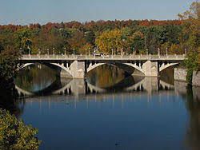
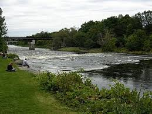
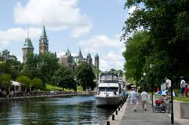

The Rideau River, which is located in Ontario, Canada, is a popular site for many of the 6.6 million tourists who come to Ontario each year. Later, I will talk about all the effects of those tourists are doing to the river and and the impact that it has on the on the biodiversity of the area. For now, let's talk about the ecosystem of the Rideau River.

Exploring the Ecosystem
The Rideau River ecosystem is home to a diverse
range of plants and animals, on land and in the
water. On the shores of the river, you can find
various plants like milkweed, cattails, and
lily pads. These plants provide food for insects,
birds, and other animals. On the land, you can spot
animals like beavers, otters, and raccoons that are
seaching for food and shelter.
In the water, there
are fish species like bass, pike, and perch that
thrive in the river's environment. The river also
houses amphibians like frogs and turtles, which play
an important role in the ecosystem by controlling
insect populations. Overall, the Rideau River ecosystem
is a vibrant and dynamic environment that supports
a wide variety of plant and animal life.

Many things make the Rideau River ecosystem healthy. Almost every plant is eaten by some animal, and that animal is eaten by another animal. This creates a food web that helps keep the ecosystem balanced. Additionally, the river's water quality is crucial for the survival of aquatic life. Clean water supports fish and other organisms, but because of all the tourists, pollution is becoming a big problem. In the next section, I will discuss some of the impacts of humans on the Rideau River.
The Human Impact on Rideau River
Because of all of the humans who live near the Rideau River,
garbage on the ground and in the air get blown and washed
into the river, which is a big source of all of the pollutants.
Another chunk of it is during heavy rainfalls, the system can
overflow which can cause untreated sewage water to flow into the
river, which is disgusting. This pollution can harm the plants
and animals that live in and around the river, making it harder
for them to survive.
Tourists also sometimes disturb wildlife by
getting too close or making too much noise, which can stress out
the animals and disrupt their natural behaviors. To help protect
the Rideau River ecosystem, it's important for everyone to be
mindful of their actions and take steps to reduce pollution and
minimize their impact on the environment.

Even though many people don't realize it, dams do affect the local
ecosystems. They can completely block off a fish's migration track,
basically trapping them in the cold under the ice. They also can
block off parts of the food web, which can lead to fish going hungry.
One last critical problem they make is they can block the nutrients
and vitamins off that that the animals need.
Another problem that the humans create is similar to the first one I
described but I still think it deserves a paragraph. When it rains,
the water can filter into the ground, which eventually ends up in
a water body like the Rideau River. When it's in the ground, it
soaks up bad stuff in the ground like weedkiller and oil. When this
gets in the water, it is almost impossible to get it out. Especially
weedkiller and this is even worse because that could be dangerous to
fish and even humans.
Now is a good idea to think of a way you can prevent this and if you
are doing something that could be harmful to the river, try to stop.
Conclusion and Sources
After all of this, you should have a good understanding of the ecosystem of the Rideau River and how humans impact it. The ecosystem is very diverse and has many different plants and animals that all depend on each other to survive. That's whats awesome about the Rideau River.